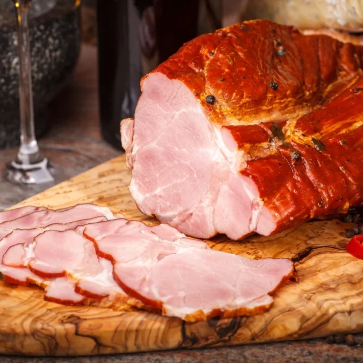
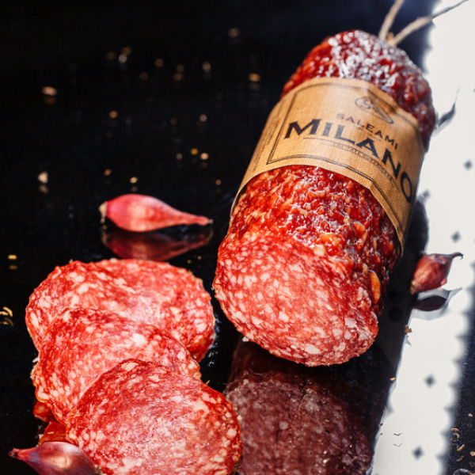
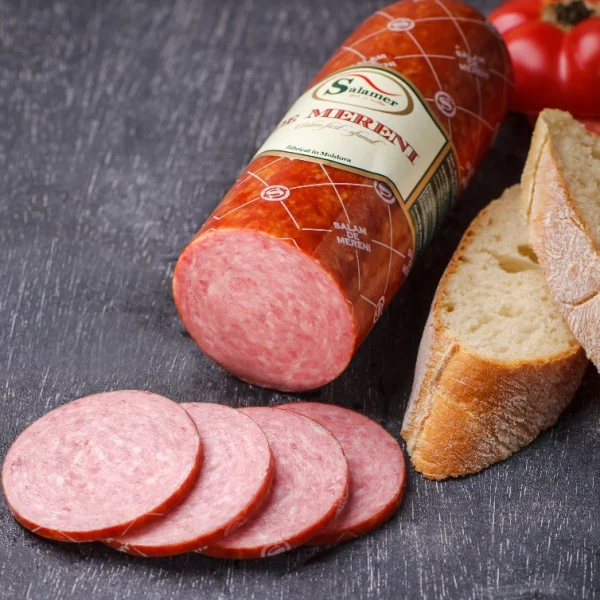
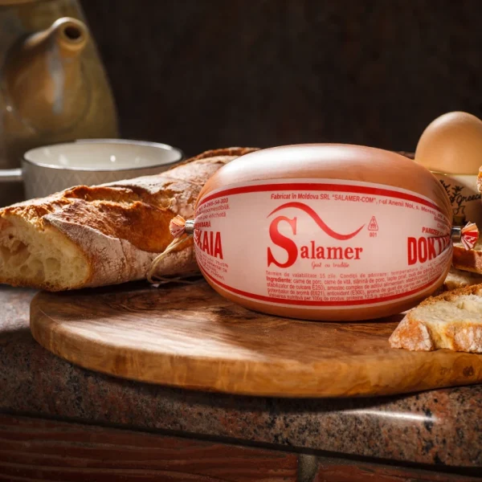
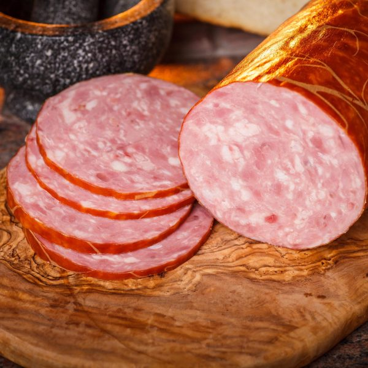
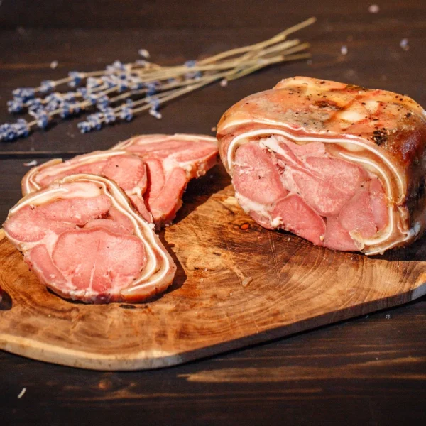
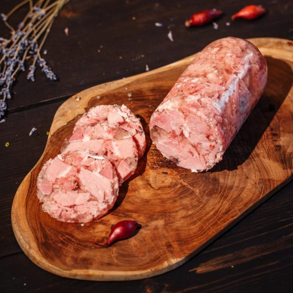

Trage pentru a naviga!
Produse
Produse afumat-fierte
Specialități afumat-fierte de calitatea superioară preparate din carne de porc, carne de vită și decor de condimente naturale. Aperitive excelente pentru masa de sărbători, cabanos de porc, mușchiuleț de porc condimentat, jambon de porc Țărănesc, jambon de porc Bavarez, antricot de vită, piept Rustic și altele.
Salam crud-afumat
Produse crud-afumate cu gust unic preparate din carne de porc, carne de vită, carne de pasăre, slănină de porc și condimente. Pentru o masă rapidă și delicioasă alege salamul Iberia, Milano, Moscova, Campanello, Dacia, De Mereni, Barcelona, Nobil, și cârnăciori la bere de porc și de pui.
Salam fiert-afumat
Produse fiert-afumate de calitate superioară preparate din carne de porc, carne de vită, piept de pui, slănină de porc și condimente. Alege salamul De Mereni, De Moldova, Vienez, De Moscova și Făgăraș, pentru o masă plină de gust.
Crenvurști, parizere
Produse de calitatea I și calitatea superioară preparate din carne de porc, carne de vită, carne de pasăre și condimente. Acestea includ crenvurști Lacta, Puișor, Fine, Salamer, parizer Doktorskaia, parizer Preferat, parizer Lacta, safalade Voinicești și De calitatea întâi, care aduc pe mese un deliciu rapid și gustos.
Salam semi-afumat
Carne de porc, carne de vită, carne de pasăre, slănină de porc și condimente care s-au combinat în produse semiafumate de calitatea I și calitatea superioară. Delectează-te cu salamul Aperitiv de Mereni, De Casă, Frugal, Lunchmeat, Oltenesc, Cabanos de Mereni, Lukka, și De Provincie.
Șuncă și rulade
Produse fierte și afumat-fierte de calitatea superioară preparate din carne de porc, carne de vită, carne de pasăre și condimente. Alege un produs preferat de toată familia, cum ar fi rulada Bavareză, Trio, șuncă De Mereni și Victoria.
Tobe, sângerete, pate
Produse aromate și condimentate de calitatea I și calitatea superioară preparate din carne de porc, carne de vită și condimente. Încearcă un gust tradițional – sângerete De Casă, toba moldovenească (Saltison de porc), toba Salamer și pate Salamer.
Acest website a fost realizat în cadrul competiției ”Tekwill Junior Ambassadors” organizată de proiectul ”Tekwill în Fiecare Școală” și nu reflectă neapărat opinia proiectului.